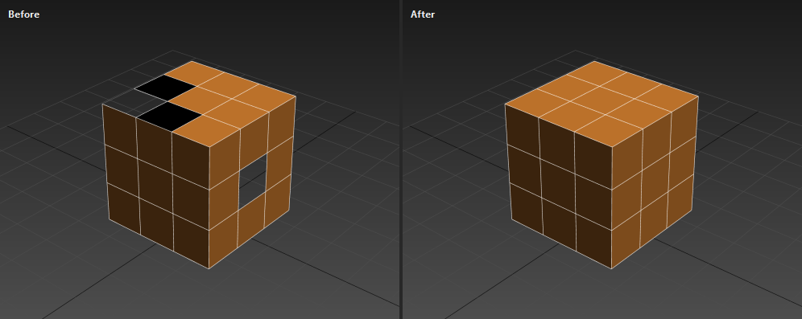
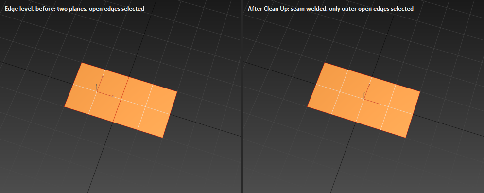
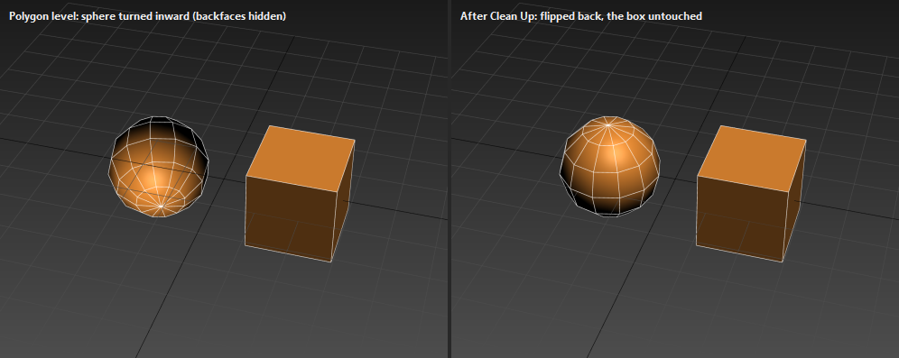

Tools / Clean Up
Clean Up
One key tidies up the mesh you are editing. What it does depends on the level you are in.
What it does
Clean Up works on the Editable Poly or Edit Poly you are editing, at any sub-object level. It is one undo step, and a box at the top of the viewport tells you what it did.

At vertex, edge or border level it cleans the vertices: it welds vertices that sit on top of each other, removes loose vertices, and removes vertices sitting in the middle of a straight edge. Then it selects the open edges (at vertex level, their vertices). It never flips a polygon at these levels.
At polygon or element level it only turns polygons that face inward back outward, and removes nothing.
Press 3 at vertex level, then at polygon level on a box with flipped polygons.
How to use it
- Select the object and go to the Modify panel, then to a sub-object level.
- Press 3. You can also run Clean Up from the 9000 Toolkit category in Customize.
- Read the box at the top of the viewport. Ctrl+Z undoes everything in one step.
Options
There are no options. The level decides the job:
| Level | What it does |
|---|---|
| Vertex, edge, border | Welds doubled vertices, removes loose and straight-line vertices, selects open edges. |
| Polygon, element | Flips inward-facing polygons outward. Nothing is removed. |


Good to know
- Outside a sub-object level, 3 does what it did in Max before (switches to sub-object level 3).
- It works on Editable Poly and Edit Poly only. On anything else the box tells you so.
- With nothing to flip at polygon level, your selection stays and no undo step is added.
- A nearly flat open mesh (a bumpy plane or terrain) is left alone rather than flipped upside down.
- If a mesh is too broken for Clean Up, try Rebuild Mesh.